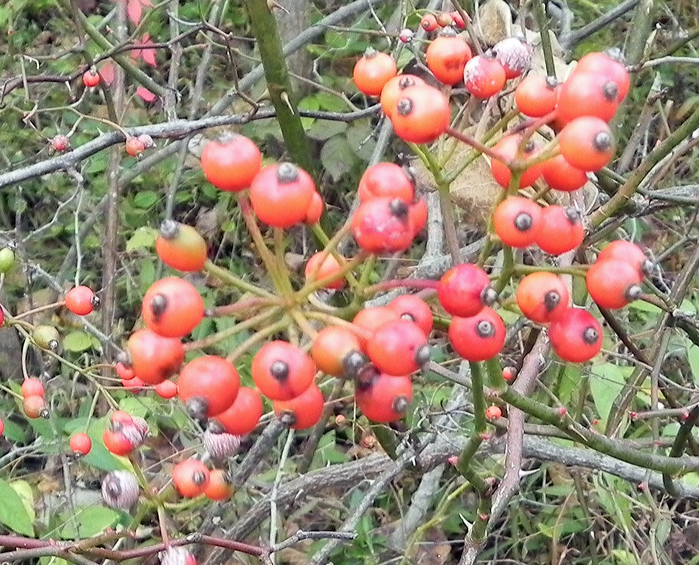
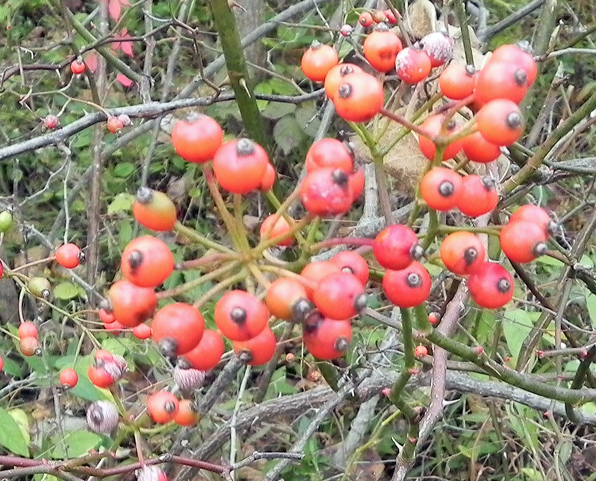

Autumn Olive
Genus/species: Elaeagnus umbellate, angustifolia
Description: Autumn Olive is a large deciduous shrub that can grow to 20 feet and 30 feet wide. Identifying characteristics include small 1 to 3 inches, oval leaves that are alternately arranged and lance-shaped with a smooth edge. The leaves are dark green on top and silver underneath. The stems are silvery or golden brown, speckled, and often with thorns. It produces yellow flowers and reddish pink fruit. Its aggressive proliferation through seed production can create dense thickets and negatively affect natural areas. This plant resprouts vigorously after cutting. For control, young plants should be removed quickly. Cut stump or foliar herbicide treatments are recommended for smaller patches in late summer or early fall.
Burning Bush
Genus/species: Euonymus alatus
Description: Burning Bush is a slow growing perennial shrub that can reach 4 ½’ to 6½’ feet tall. It gets its name from its bright red foliage in the fall. Identifying characteristics include green elliptical leaves that are opposite and are edged with fine teeth. The bark is gray with prominent corky wings running along the sides. Its red berries that are poisonous. It is widely naturalized and invading natural habitats often forming dense thickets. Control is necessary with hand pulling for small plants and chemical treatment for the larger plants. Care should be taken to remove as much of the root system as possible to avoid resprouting.
Bush Honeysuckle
Genus/species: Lonicera maackii, L. morrowi, L. tatarica
Description: Bush Honeysuckle is an upright deciduous shrub that can grow to 15 feet tall, forming dense thickets. Identifying characteristics include dark green egg-shaped leaves that have an opposite arrangement and have a sharp point at their tip. The underside of the leaf has hairs along the veins. Older stems are often hollow while the native species do not have hollow stems. The flowers are paired and turn from white to yellow with age. Bright red berries show up in fall and winter. This plant can rapidly invade and overtake a site, altering native habitats by decreasing light availability, depleting soil moisture and nutrients. The seeds are spread by birds so routine control is necessary with hand pulling for small plants and herbicide treatment for the larger plants. Care should be taken to remove as much of the root system as possible to avoid resprouting.
Chinese Privet
Genus/species: Ligustrum sinense, L. vulgare
Description: Privet is a semi-evergreen shrub that can form dense thickets. Identifying characteristics include straight twigs with small, opposite, elliptical leaves that are and ½” to 1½” long. Berries that are dark blue when ripe forming a grape like cluster, and flowerets come in May. The trunk is usually forked near the base. The bark is smooth gray. The seeds are spread by birds so routine control is necessary with hand pulling for small plants and herbicide treatment for the larger plants. Care should be taken to remove as much of the root system as possible to avoid resprouting.
Multiflora Rose
Genus/species: Rosa multiflora
Description: Multiflora Rose is a perennial shrub with thorny, curving branches that can form impenetrable thickets in a number of habitats. Identifying characteristics include alternate, compound leaves that consist of 5-11 sharply toothed, oval leaflets. It produces small clusters of white flowers in late spring, followed by small, bright red rose hips during the summer, which remain during the winter. A mature plant can produce a million seeds in a year, which can survive for up to 20 years in the soil. Manually digging the entire root system and repeated cutting several times per growing season for 2-4 years will eventually cause mortality. Cut stump treatment is effective in killing the entire plant.


 as.jpg)


 hs.jpg)

 ps.jpg)


 
